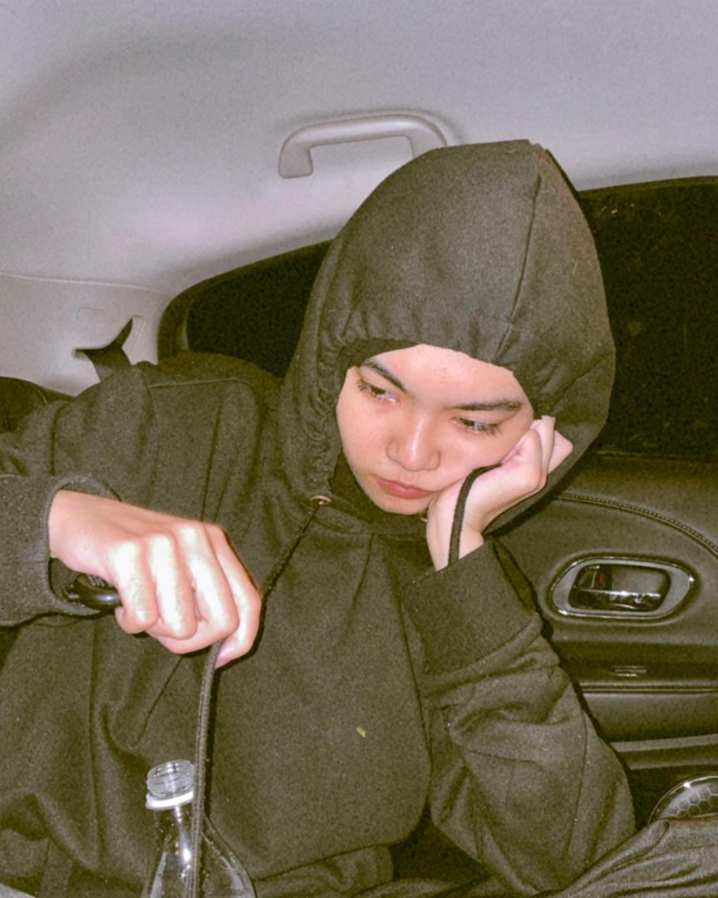

This is the home page of my website. Welcome!

Hello! I am Qistina Ayuni, a dynamic and motivated Information Management student poised to embark on a journey in the professional realm. Fueled by a passion for leveraging information to drive strategic decision-making, I am actively seeking opportunities to apply my skills, contribute to innovative projects, and make a meaningful impact in the ever-evolving field of information management.